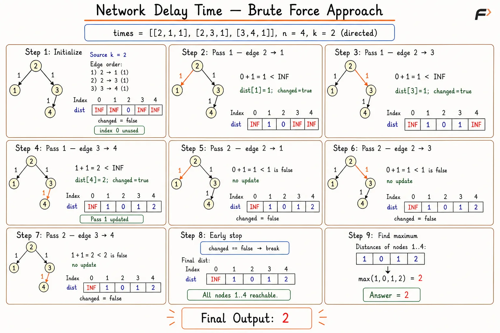
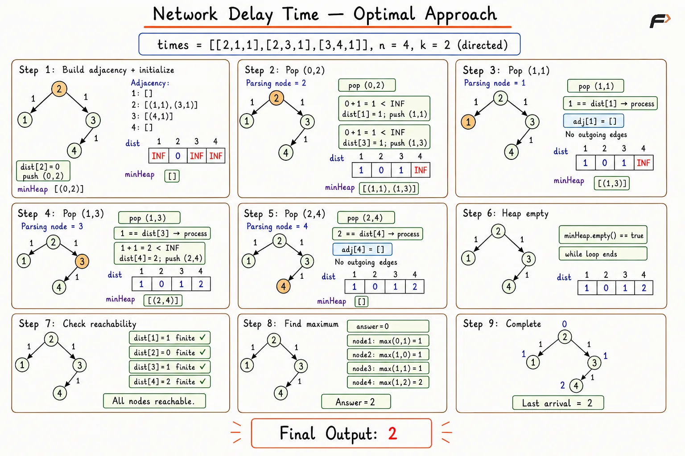

Network Delay Time Using Dijkstra's Algorithm
A network contains n nodes labeled from 1 to n. Each directed edge [u,v,w] means a signal needs w time units to travel from node u to node v.
A signal starts from node k. Return the minimum time required for every node to receive the signal. Return -1 if at least one node cannot receive the signal.
Example 1
Input: times = [[2,1,1],[2,3,1],[3,4,1]], n = 4, k = 2
Output: 2
Explanation: Nodes 1 and 3 receive the signal after 1 time unit. Node 4 receives the signal through node 3 after 2 time units.
Example 2
Input: times = [[1,2,1]], n = 2, k = 2
Output: -1
Explanation: No directed route reaches node 1 from source node 2.
Brute Force Approach
Signal arrival time at a node equals the shortest directed-path distance from source k. Bellman–Ford repeatedly scans every directed edge, allowing each relaxation round to extend known shortest paths by one additional edge.
A shortest simple path contains at most N-1 edges, so N-1 rounds are sufficient. The largest finite shortest distance represents the time required for the signal to reach the final node.
Algorithm
Initialize all distances as infinity and set
distance[k]to0, establishing nodekas the signal source.Perform at most
N-1relaxation rounds, since no shortest simple path can contain more thanN-1edges.At the beginning of every round, initialize an update flag as false to detect whether any shorter route is discovered.
Traverse every directed edge and skip relaxation when the starting node remains unreachable.
When
distance[source]+travelTimeis smaller, update the destination distance and set the update flag to true.End the relaxation process when a complete round produces no update, as all shortest distances have stabilized.
Scan all nodes, return
-1upon finding an infinite distance, and otherwise return the maximum distance as the network delay time.
Dry Run

network-delay-time-brute-force-corrected
Solution
#include <bits/stdc++.h>
using namespace std;
class Solution {
public:
// Return minimum time required for every node to receive the signal.
long long networkDelayTime(vector<vector<int>>& times, int n, int k) {
// Use a wide sentinel outside valid accumulated times.
const long long INF = numeric_limits<long long>::max() / 4;
// Store shortest signal time using long long.
vector<long long> dist(n + 1, INF);
// Source receives the signal immediately.
dist[k] = 0;
// Propagate shortest distances through at most n - 1 edge rounds.
for (int pass = 1; pass <= n - 1; pass++) {
bool changed = false;
// Relax every directed edge in input order.
for (const vector<int>& edge : times) {
int from = edge[0];
int to = edge[1];
long long travelTime = edge[2];
// Ignore edges whose starting node remains unreachable.
if (dist[from] == INF) {
continue;
}
// Record a faster signal arrival.
if (dist[from] + travelTime < dist[to]) {
dist[to] = dist[from] + travelTime;
changed = true;
}
}
// Stop after a round without any improvement.
if (!changed) {
break;
}
}
long long answer = 0;
// Find the last signal arrival among all nodes.
for (int node = 1; node <= n; node++) {
// If any node is unreachable, signal cannot reach all nodes.
if (dist[node] == INF) {
return -1;
}
// Track the maximum shortest distance.
answer = max(answer, dist[node]);
// Stop after processing the last valid node.
if (node == n) {
break;
}
}
// Return the time when the last node receives the signal.
return answer;
}
};
// Driver code.
int main() {
vector<vector<int>> times = {
{2, 1, 1}, {2, 3, 1}, {3, 4, 1}
};
int n = 4;
int k = 2;
Solution sol;
cout << sol.networkDelayTime(times, n, k);
return 0;
}Complexity Analysis
Time Complexity: O(N×M), where N is the number of nodes and M is the number of directed edges; up to N-1 rounds scan all M edges.
Space Complexity: O(N), where the distance array stores one shortest signal-arrival time for each of the N nodes.
Optimal Approach
All travel times are non-negative, allowing Dijkstra’s Algorithm to finalize signal-arrival times in increasing order. A binary min-heap efficiently selects the node having the earliest known arrival time.
Every successful relaxation inserts a new arrival–node pair into the heap. Outdated pairs are skipped, while the largest final shortest distance represents the total network delay.
Algorithm
Build a directed weighted adjacency list from all signal times, storing each destination node with the corresponding travel time.
Initialize all distances as infinity, set
distance[k]to0, and insert{0, k}into a min-heap.Continue processing while the heap contains entries and remove the pair having the smallest arrival time.
Skip the removed pair when the heap time differs from the current stored distance, as the pair represents an outdated route.
Traverse every outgoing edge and calculate the candidate arrival time as
currentTime+edgeWeight.Upon finding a smaller arrival time, update the neighbor’s distance and insert the new arrival–neighbor pair into the heap.
Scan all nodes, return
-1upon finding an infinite distance, and otherwise return the maximum shortest distance as the network delay time.
Dry Run

network-delay-time-dijkstra-parsing-nodes-corrected
Solution
#include <bits/stdc++.h>
using namespace std;
class Solution {
public:
// Return minimum time required for every node to receive the signal.
long long networkDelayTime(vector<vector<int>>& times, int n, int k) {
vector<vector<pair<int, int>>> adj(n + 1);
// Build a directed weighted adjacency list.
for (const vector<int>& edge : times) {
int from = edge[0];
int to = edge[1];
int travelTime = edge[2];
adj[from].push_back({to, travelTime});
}
// Use a wide sentinel outside valid accumulated times.
const long long INF = numeric_limits<long long>::max() / 4;
vector<long long> dist(n + 1, INF);
priority_queue<
pair<long long, int>,
vector<pair<long long, int>>,
greater<pair<long long, int>>
> minHeap;
// Start Dijkstra traversal from source k.
dist[k] = 0;
minHeap.push({0, k});
// Process available nodes by earliest signal arrival.
while (!minHeap.empty()) {
auto [currentTime, node] = minHeap.top();
minHeap.pop();
// Skip an entry replaced by a faster route.
if (currentTime != dist[node]) {
continue;
}
// Relax every outgoing directed edge.
for (const auto& [neighbor, travelTime] : adj[node]) {
long long candidate = currentTime + travelTime;
// Record a faster signal arrival.
if (candidate < dist[neighbor]) {
dist[neighbor] = candidate;
minHeap.push({candidate, neighbor});
}
}
}
long long answer = 0;
// Find the last signal arrival among all nodes.
for (int node = 1; node <= n; node++) {
// If any node is unreachable, return -1.
if (dist[node] == INF) {
return -1;
}
answer = max(answer, dist[node]);
// Stop after processing the last node.
if (node == n) {
break;
}
}
// Return the final network delay time.
return answer;
}
};
// Driver code.
int main() {
vector<vector<int>> times = {
{2, 1, 1}, {2, 3, 1}, {3, 4, 1}
};
int n = 4;
int k = 2;
Solution sol;
cout << sol.networkDelayTime(times, n, k);
return 0;
}Complexity Analysis
Time Complexity: O((N+M)×log N), where N is the number of nodes and M is the number of directed edges; heap operations process extractions and successful relaxations.
Space Complexity: O(N+M), where the adjacency list stores N nodes and M edges, while the distance array and heap require up to O(N+M) space.
Interview follow-up Questions
Every node receives the signal at the corresponding shortest arrival time, and complete delivery finishes at the latest arrival.